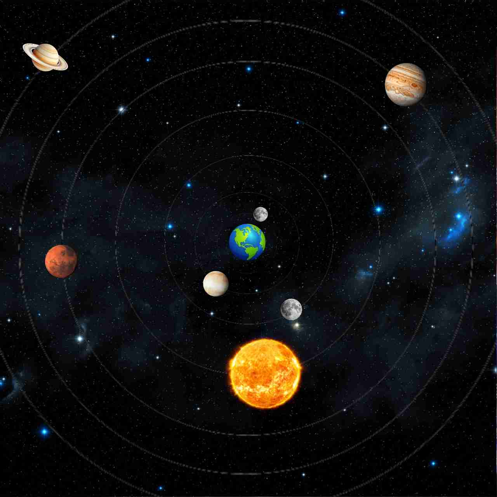
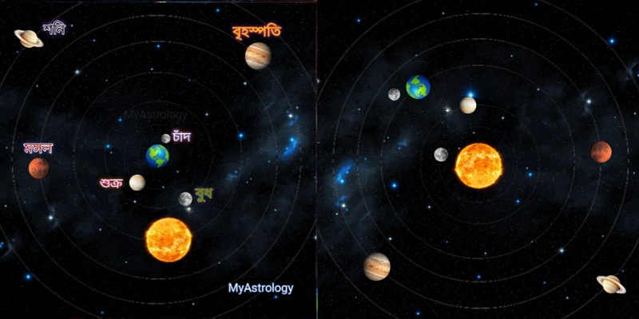
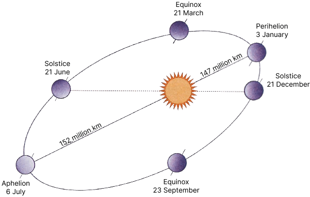
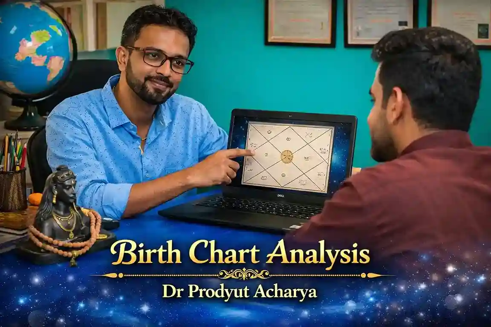

🌌 বৈদিক জ্যোতির্বিজ্ঞান: যদি পৃথিবী থেমে যেত — মহাকাশের রহস্য
ভূমিকা ও কৌতূহলী প্রশ্ন — Vedic Astronomy
আমরা সকলেই জানি—মহাকাশে কিছুই স্থির নয়। সৌরমণ্ডল যেন এক বিশাল সঙ্গীতানুষ্ঠান, যেখানে প্রতিটি গ্রহ তার নিজস্ব ছন্দে তালে মেতে নাচছে। সূর্যকে কেন্দ্র করে পৃথিবীর অবিরাম ঘূর্ণন, চাঁদের ধীরলয়ে প্রদক্ষিণ, আর নক্ষত্রদের নীরব জ্বলজ্বলে উপস্থিতি—সবই মিলিয়ে যেন এক মহাজাগতিক কাব্য।
কিন্তু ভাবুন তো—যদি একদিন এই নাট্যমঞ্চের মূলে থাকা পৃথিবীকে আমরা একেবারে থামিয়ে দিই? যদি সে আর ঘুরে না, না প্রদক্ষিণ করে? তাহলে আকাশের দৃশ্য কি আগের মতোই থাকবে, নাকি বদলে যাবে প্রতিটি গ্রহ-নক্ষত্রের নৃত্যের ধারা? এ প্রশ্ন শুধু বৈজ্ঞানিক নয়, গভীর দার্শনিকও — কারণ এতে লুকিয়ে আছে আমরা "বাস্তব" বলে যা দেখি তার আসল রূপ।
সৌরমণ্ডল ও পৃথিবী-চন্দ্র সম্পর্ক
সৌরমণ্ডলের কেন্দ্রে অবস্থান করছে সূর্য—এক দীপ্তিমান মহাশক্তির গোলক, যার মহাকর্ষে আবদ্ধ রয়েছে আটটি গ্রহ, অসংখ্য উপগ্রহ ও নক্ষত্রখচিত ধূলিকণা। পৃথিবী প্রতি বছর সূর্যের চারদিকে ঘুরে আসে প্রায় ৩৬৫ দিন ৫ ঘণ্টা ৪৮ মিনিটে—যা আমাদের "সূর্য বৎসর"। চাঁদ, আমাদের নিকটতম মহাজাগতিক সঙ্গী, পৃথিবীর চারদিকে এক চক্কর দেয় প্রায় ২৭.৩ দিনে, কিন্তু পূর্ণিমা থেকে পূর্ণিমা যেতে সময় লাগে প্রায় ২৯.৫ দিন—এটাই "সিনোডিক মাস"।
যদি পৃথিবী স্থির থাকত? — Geocentric Model

পৃথিবীকে যদি আমরা স্থির ধরি, তবে সূর্য, চাঁদ ও সমস্ত গ্রহ-নক্ষত্র যেন প্রতিদিন আকাশে তার চারপাশে ঘুরছে বলে মনে হবে। এ দৃশ্য প্রাচীন ভারতীয় জ্যোতির্বিদরা পৃথিবী-কেন্দ্রিক মডেল (Geocentric Model) দিয়ে ব্যাখ্যা করতেন। সূর্যসিদ্ধান্ত ও আর্যভটীয়-এর পাতায় আমরা পাই আকাশের এমন এক মানচিত্র, যেখানে সূর্য প্রতিদিন পূর্ব থেকে উঠে পশ্চিমে ডোবে।
আধুনিক বিজ্ঞান আমাদের বলেছে, আসলে পৃথিবীই ঘুরছে — কিন্তু দার্শনিকভাবে দেখলে, এই পার্থক্য আমাদের শেখায় যে "দৃষ্টি" ও "বাস্তবতা" সবসময় একই নয়।
পৃথিবী স্থির ধরে মহাকাশের দৃশ্য — Geocentric Model, Apparent Motion ও Retrograde Motion
Geocentric Model-এর ধারণা
মানুষের আকাশ পর্যবেক্ষণের ইতিহাসে এক সময়ে সবচেয়ে জনপ্রিয় মডেল ছিল Geocentric Model — অর্থাৎ পৃথিবী মহাবিশ্বের কেন্দ্র, আর সূর্য, চাঁদ, গ্রহ ও নক্ষত্র সবাই পৃথিবীর চারপাশে ঘুরছে।
এই ধারণা গ্রিক জ্যোতির্বিদ ক্লডিয়াস টলেমি (Claudius Ptolemy)-এর Almagest গ্রন্থে অত্যন্ত বিশদভাবে বর্ণিত হয়েছে। ভারতীয় জ্যোতির্বিজ্ঞানেও, বিশেষ করে সূর্যসিদ্ধান্ত ও আর্যভটীয় গ্রন্থে, পৃথিবী-কেন্দ্রিক পর্যবেক্ষণের বর্ণনা পাওয়া যায়।
আপাত গতি (Apparent Motion)
আমরা আকাশের দিকে তাকিয়ে যে গতি দেখি, তা আসলে আপাত গতি — বাস্তব গতি নয়, বরং পর্যবেক্ষকের দৃষ্টিকোণ থেকে দেখা গতি।
উদাহরণ: আপনি যদি চলন্ত গাড়িতে বসে পাশের মাঠ দেখেন, মনে হবে গাছগুলো পিছনে চলে যাচ্ছে। বাস্তবে গাছ স্থির, আপনি এগোচ্ছেন।
Retrograde Motion — গ্রহের পিছনে চলা বক্র গতি
সবচেয়ে রহস্যময় ঘটনা হলো Retrograde Motion — যেখানে দেখা যায়, কোনো গ্রহ কিছুদিনের জন্য উল্টো দিকে চলছে। এই ঘটনা বিশেষ করে মঙ্গল, বৃহস্পতি ও শনির মতো বাইরের গ্রহের ক্ষেত্রে বেশি দেখা যায়।
Geocentric Model এই ঘটনাকে ব্যাখ্যা করেছিল Epicycle (ছোট বৃত্ত) ও Deferent (বড় বৃত্ত)-এর ধারণা দিয়ে।
উদাহরণ: ভাবুন, আপনি দৌড় প্রতিযোগিতায় আছেন এবং পাশের লেনে ধীরে চলা একজনকে ওভারটেক করলেন। ওভারটেক করার মুহূর্তে মনে হবে সে পিছনে যাচ্ছে — আকাশে বাইরের গ্রহদের Retrograde Motion ঠিক এরকমই দেখায়।

সূত্র: NASA ও ISRO-এর প্রকাশিত সৌরজগতের গ্রাফিক্স।
সূর্য-কেন্দ্রিক বনাম পৃথিবী-কেন্দ্রিক গণনা — Heliocentric ও Geocentric তুলনা
১. Heliocentric বনাম Geocentric — মৌলিক ধারণা
Heliocentric Model: ১৫৪৩ সালে নিকোলাস কপারনিকাস তাঁর বই De revolutionibus orbium coelestium-এ প্রস্তাব করেন যে, সূর্য সৌরমণ্ডলের কেন্দ্র এবং সমস্ত গ্রহ (পৃথিবীসহ) সূর্যের চারদিকে ঘোরে।
Geocentric Model: প্রাচীন গ্রিস ও ভারতীয় জ্যোতির্বিজ্ঞানে জনপ্রিয় ছিল। পৃথিবীকে স্থির ধরে সূর্য, চাঁদ ও গ্রহদের পৃথিবীর চারপাশে ঘুরতে দেখা যায়।
২. সময় ও গতির পার্থক্য
Geocentric Model-এ গ্রহদের আপাত গতি বোঝাতে "Epicycle" এবং "Deferent" ধারণা ব্যবহার করা হয়।
Heliocentric Model-এ গ্রহের গতি ব্যাখ্যা করা হয় সরল কক্ষপথ দিয়ে, যেখানে জোহানেস কেপলার-এর তিনটি সূত্র প্রযোজ্য:
- কক্ষপথ উপবৃত্তাকার (Elliptical Orbit)
- সমান সময়ে সমান ক্ষেত্রফল অতিক্রম (Equal Areas in Equal Time)
- কক্ষপথের সময়ের বর্গ ∝ দূরত্বের ঘন (T² ∝ R³)
৩. কোনটি বৈজ্ঞানিকভাবে সঠিক?
আধুনিক জ্যোতির্বিজ্ঞান, ISRO ও NASA-এর সব গবেষণা Heliocentric Model-এর উপর ভিত্তি করে। স্যাটেলাইট, স্পেস প্রোব ও গ্রহ মিশনের সঠিক পথ নির্ধারণ শুধুমাত্র সূর্য-কেন্দ্রিক পদ্ধতিতেই সম্ভব।
৪. তুলনামূলক টেবিল
| বিষয় | Geocentric Model | Heliocentric Model |
|---|---|---|
| কেন্দ্র | পৃথিবী | সূর্য |
| জটিলতা | বেশি (Epicycle, Deferent প্রয়োজন) | কম (কক্ষপথ + কেপলারের সূত্র) |
| সঠিকতা | সীমিত (শুধু চাক্ষুষ মিল) | উচ্চ (গাণিতিক ও পর্যবেক্ষণ মিল) |
| পর্যবেক্ষণ | চাক্ষুষভাবে সহজ | টেলিস্কোপ/মডেল প্রয়োজন |
| আধুনিক ব্যবহার | নেই | সব মহাকাশ গবেষণা ও মিশন |
| প্রস্তাবক | টলেমি, সূর্যসিদ্ধান্ত | কপারনিকাস, কেপলার, গ্যালিলিও |

সূত্র: Copernicus (1543) — De revolutionibus orbium coelestium, Claudius Ptolemy — Almagest, ISRO & NASA Solar System Graphics
🌞 সূর্য-কেন্দ্রিক গ্রহের গতি ও সময় (Heliocentric Period)
১. Heliocentric Period কী?
ভাবুন, আপনি সূর্যের উপর দাঁড়িয়ে আছেন। চারপাশে বুধ, শুক্র, পৃথিবী, মঙ্গল, বৃহস্পতি… সব গ্রহ তাদের নিজ নিজ পথে ঘুরছে।
Heliocentric Period মানে হলো — কোনো গ্রহ সূর্যের চারদিকে একবার পূর্ণ ঘুরে আসতে যত সময় নেয়।
২. Kepler's Third Law — সহজ ভাষায়
জ্যোতির্বিদ Johannes Kepler ৪০০ বছর আগে বলেছিলেন —
"গ্রহ যত দূরে, তার ঘুরতে তত বেশি সময় লাগে।"
তাঁর তৃতীয় সূত্র:
T² ∝ R³
- T = একবার ঘুরতে সময় (পৃথিবীর বছর হিসেবে)
- R = সূর্য থেকে গড় দূরত্ব (AU — Astronomical Unit)
- ১ AU = পৃথিবী থেকে সূর্যের গড় দূরত্ব (~১৪৯.৬ মিলিয়ন কিমি)
সহজ উদাহরণ — মঙ্গল গ্রহ:
পৃথিবী → R = 1 AU, T = 1 বছর | মঙ্গল (Mars) → R = 1.524 AU
- R³ = 1.524³ ≈ 3.54
- T² = 3.54 ⇒ T = √3.54 ≈ 1.88 বছর
অর্থাৎ, মঙ্গল সূর্যকে একবার ঘুরতে প্রায় ১ বছর ১১ মাস সময় নেয়।
৩. NASA Planetary Fact Sheet — গ্রহের কক্ষপথকাল
| গ্রহ | দূরত্ব (AU) | কক্ষপথকাল (বছর) | দিন |
|---|---|---|---|
| Mercury (বুধ) | 0.387 | 0.241 | 88 |
| Venus (শুক্র) | 0.723 | 0.615 | 225 |
| Earth (পৃথিবী) | 1.000 | 1.000 | 365 |
| Mars (মঙ্গল) | 1.524 | 1.88 | 687 |
| Jupiter (বৃহস্পতি) | 5.203 | 11.86 | 4,332 |
| Saturn (শনি) | 9.537 | 29.46 | 10,759 |
| Uranus (ইউরেনাস) | 19.191 | 84.01 | 30,687 |
| Neptune (নেপচুন) | 30.07 | 164.8 | 60,190 |
৪. কক্ষপথের আকার
সব গ্রহ উপবৃত্তাকার (Elliptical) কক্ষপথে ঘোরে, যেখানে সূর্য থাকে উপবৃত্তের এক ফোকাসে।
- Perihelion (সূর্যের কাছাকাছি) → গ্রহ দ্রুত চলে
- Aphelion (সূর্য থেকে দূরে) → গ্রহ ধীরে চলে

সূত্র: Johannes Kepler — Harmonices Mundi (1619), NASA — Solar System Exploration, ISRO — Space Science Data
🌍 পৃথিবী-কেন্দ্রিক গ্রহের গতি ও সময় (Synodic Period)
১. Synodic Period কী?
ভাবুন, আপনি পৃথিবীতে দাঁড়িয়ে আকাশ দেখছেন। Synodic Period মানে হলো —
"পৃথিবী থেকে দেখা কোনো গ্রহের একই অবস্থানে (যেমন Opposition বা Conjunction) ফিরে আসতে যত সময় লাগে।"
- Heliocentric Period → সূর্যের দৃষ্টিতে গ্রহের একবার ঘোরা
- Synodic Period → পৃথিবীর দৃষ্টিতে গ্রহের একবার "পুনরায় দেখা"
২. উদাহরণ — মঙ্গল গ্রহ
Heliocentric Period (Tₘ) = 1.88 বছর | পৃথিবীর Period (Tₑ) = 1 বছর
1/S = | (1/Tₑ) - (1/Tₘ) |
- 1/Tₑ = 1
- 1/Tₘ = 1 / 1.88 ≈ 0.532
- পার্থক্য = 1 - 0.532 = 0.468
- S = 1 / 0.468 ≈ 2.136 বছর
অর্থাৎ, পৃথিবী থেকে মঙ্গলকে একই অবস্থানে ফিরতে দেখতে প্রায় ২ বছর ৫০ দিন লাগে।
৩. গ্রহের Synodic Period টেবিল
| গ্রহ | Heliocentric Period (বছর) | Synodic Period (দিন) |
|---|---|---|
| বুধ (Mercury) | 0.241 | 116 |
| শুক্র (Venus) | 0.615 | 584 |
| মঙ্গল (Mars) | 1.88 | 780 |
| বৃহস্পতি (Jupiter) | 11.86 | 399 |
| শনি (Saturn) | 29.46 | 378 |
| ইউরেনাস (Uranus) | 84.01 | 370 |
| নেপচুন (Neptune) | 164.8 | 368 |
৪. Vedic Astrology-তে প্রয়োগ
- গ্রহের রাশি পরিবর্তন (Transits) পূর্বাভাসে Sidereal Time গুরুত্বপূর্ণ।
- তিথি, নক্ষত্র, যোগ, করণ ইত্যাদি দৈনিক পঞ্জিকা তৈরিতে Geocentric Position ব্যবহার হয়।
- শনি প্রায় ২.৫ বছর এক রাশিতে থাকে, তাই "শনি সাড়ে সাতি" গণনায় রাশি ও ডিগ্রির সঠিক অবস্থান জরুরি।
সূত্র: ISRO, US Naval Observatory, NASA Solar System Dynamics
♈ রাশিচক্র ও গ্রহের প্রদক্ষিণ সময়
১. রাশিচক্র (Zodiac) ও গ্রহের গতি পথ
রাশিচক্র হল আকাশের ৩৬০° একটি কাল্পনিক বৃত্ত, যা ১২টি সমান ভাগে বিভক্ত — প্রতিটি ৩০° করে। প্রতিটি ভাগ একটি রাশি নামে পরিচিত (মেষ ♈ থেকে মীন ♓ পর্যন্ত)।
সূর্য, চন্দ্র ও গ্রহগুলো এই বৃত্ত বরাবরই চলে, যাকে আমরা ক্রান্তিবৃত্ত (Ecliptic) বলি।
২. Sidereal Period বনাম Synodic Period
| পরিভাষা | অর্থ | গণনার ভিত্তি | উদাহরণ |
|---|---|---|---|
| Sidereal Period | স্থির নক্ষত্রের তুলনায় একবার প্রদক্ষিণের সময় | নক্ষত্র পট | মঙ্গল: 687 দিন |
| Synodic Period | পৃথিবী থেকে একই অবস্থানে ফিরে আসার সময় | পৃথিবী ও গ্রহের আপেক্ষিক গতি | মঙ্গল: 780 দিন |
৩. রাশিচক্র অনুযায়ী সময় গণনা
| গ্রহ | Sidereal Period (দিন) | ১ রাশি পার হতে সময় | পুরো রাশিচক্র |
|---|---|---|---|
| চন্দ্র 🌙 | 27.3 | ~2.25 দিন | 27.3 দিন |
| বুধ ☿ | 88 | ~7.33 দিন | 88 দিন |
| শুক্র ♀ | 225 | ~18.75 দিন | 225 দিন |
| সূর্য ☀ | 365.25 | ~30.44 দিন | 365.25 দিন |
| মঙ্গল ♂ | 687 | ~57.25 দিন | 687 দিন |
| বৃহস্পতি ♃ | 4333 | ~361 দিন | 12 বছর |
| শনি ♄ | 10759 | ~898 দিন | 29.46 বছর |
সূত্র: ISRO, US Naval Observatory
🌞 সূর্য বৎসর ও 🌙 চন্দ্র বৎসরের পার্থক্য
১. সূর্য বৎসরের সংজ্ঞা (Solar Year)
সূর্য বৎসর হলো পৃথিবী সূর্যের চারদিকে একবার পূর্ণ প্রদক্ষিণ করতে যে সময় নেয়।
- সময়: ৩৬৫ দিন ৫ ঘণ্টা ৪৮ মিনিট ৪৬ সেকেন্ড
- দিন হিসাবে: ৩৬৫.২৪২২ দিন
- আধুনিক গ্রেগরিয়ান ক্যালেন্ডার এই সময় অনুসরণ করে।
২. চন্দ্র বৎসরের সংজ্ঞা (Lunar Year)
চন্দ্র বৎসর হলো চাঁদের এক পূর্ণ চক্র ১২ বার সম্পন্ন হওয়ার মোট সময়।
- এক চন্দ্র মাসের গড় দৈর্ঘ্য (Synodic Month): ২৯ দিন ১২ ঘণ্টা ৪৪ মিনিট ৩ সেকেন্ড
- ১২টি চন্দ্র মাসের মোট সময়: প্রায় ৩৫৪.৩৬ দিন
অর্থাৎ, চন্দ্র বছর সূর্য বছরের তুলনায় প্রায় ১০ দিন ২১ ঘণ্টা ছোট।
৩. সময়ের পার্থক্য — টেবিল
| বছর প্রকার | দিন | ঘণ্টা | মিনিট | সেকেন্ড | পার্থক্য |
|---|---|---|---|---|---|
| সূর্য বৎসর | 365 | 5 | 48 | 46 | — |
| চন্দ্র বৎসর | 354 | 8 | 48 | 36 | ~১০ দিন ২১ ঘণ্টা ছোট |
৪. বৈজ্ঞানিক কারণ
- ☀️ সূর্য বৎসর নির্ভর করে পৃথিবীর সূর্যের চারদিকে কক্ষপথে একবার ঘোরার উপর।
- 🌙 চন্দ্র বৎসর নির্ভর করে চাঁদের পৃথিবীর চারদিকে ঘোরা ও সূর্যের সাথে আপেক্ষিক অবস্থান পরিবর্তনের উপর।
৫. অধিমাস বা মলমাসের ভূমিকা
চন্দ্র বছর সূর্য বছরের চেয়ে ছোট হওয়ায়, হিন্দু পঞ্জিকায় প্রায় ৩ বছরে একবার অতিরিক্ত মাস যোগ করা হয়, যাকে অধিমাস বা মলমাস বলা হয়। এর ফলে উৎসব ও ঋতুর সামঞ্জস্য থাকে — যেমন, দুর্গাপূজা সবসময় শরৎ ঋতুতেই আসে।
🌙 চন্দ্র তিথি ও হিন্দু উৎসবের তারিখ পরিবর্তন
১. তিথি কী?
তিথি হলো চাঁদের সূর্যের সাথে আপেক্ষিক কৌণিক দূরত্ব (Angular Distance) ১২° বাড়তে যত সময় লাগে।
- এক পূর্ণ চন্দ্রচক্রে ৩০টি তিথি হয় — শুক্লপক্ষ ১৫টি এবং কৃষ্ণপক্ষ ১৫টি।
- একেক তিথির দৈর্ঘ্য সমান নয় — ২৩ ঘণ্টা ৩৭ মিনিট থেকে ২৫ ঘণ্টা পর্যন্ত হতে পারে।
- তিথি সবসময় সূর্যোদয় থেকে সূর্যোদয় পর্যন্ত মেলে না, তাই উৎসবের গ্রেগরিয়ান তারিখ পরিবর্তিত হয়।
২. কেন তিথি পরিবর্তন হয়?
- চাঁদের কক্ষপথ উপবৃত্তাকার, তাই তার গতি কখনও বেশি, কখনও কম হয়।
- পৃথিবীর কক্ষপথের কারণে সূর্য ও চাঁদের আপেক্ষিক অবস্থান প্রতিদিন সমান হারে বদলায় না।
- এই কারণেই দুর্গাপূজা, দীপাবলি, জন্মাষ্টমী প্রভৃতি উৎসব প্রতি বছর ভিন্ন তারিখে হয়।
৩. হিন্দু পঞ্জিকা গণনার নীতি
হিন্দু পঞ্জিকা চন্দ্র-সূর্যসিদ্ধ (Lunisolar) পদ্ধতিতে তৈরি হয়।
তিথি গণনার সূত্র:
তিথি সংখ্যা = (চাঁদের দ্রাঘিমা – সূর্যের দ্রাঘিমা) ÷ 12°
যখন এই পার্থক্য ১২°, ২৪°, ৩৬° … হয়, তখন নতুন তিথি শুরু হয়।
৪. অধিমাস বা মলমাস কীভাবে যোগ হয়
- এক চন্দ্র বছর = প্রায় ৩৫৪ দিন
- এক সূর্য বছর = প্রায় ৩৬৫ দিন
- পার্থক্য = প্রায় ১১ দিন — এই পার্থক্য জমে তিন বছরে প্রায় ৩০ দিন হয়।
যখন কোনও মাসে দুটি অমাবস্যা পড়ে কিন্তু মাঝখানে সূর্য সংক্রান্তি হয় না, তখন সেই মাসকে অধিমাস বলা হয়।
৫. বাস্তব উদাহরণ
যদি কোনও বছরে দুর্গাপূজা অক্টোবরে হয়, পরের বছরে তা সেপ্টেম্বর বা নভেম্বরেও হতে পারে — সবটাই তিথি ও সূর্যের আপেক্ষিক অবস্থানের উপর নির্ভর করে।
২০২০ সালে আশ্বিন মাসে অধিমাস হয়েছিল, তাই সেই বছরের কিছু উৎসব পরের বছরে এক মাস পিছিয়ে গিয়েছিল।
ড. প্রদ্যুৎ আচার্যের সাথে Vedic Astrology, Palmistry ও Kundali Analysis — অনলাইনে, আপনার সুবিধামতো সময়ে • বাংলা ও হিন্দিতে

দুই হাতের ছবি WhatsApp-এ পাঠান — ৩/৪ ঘণ্টার মধ্যে বিস্তারিত ফোনে জানানো হবে।
- দুই হাতের সামনে ও পিছনের ছবি পাঠান
- ৩/৪ ঘণ্টার মধ্যে ফোনে বিশ্লেষণ
- হাতের রেখা অনুযায়ী প্রতিকার পরামর্শ
- বাংলা ও হিন্দি ভাষায়
🔒 Razorpay • UPI / Card / Net Banking

একইসাথে হাতের রেখা ও জন্মকুণ্ডলী বিচার — সর্বোচ্চ সুবিধা সর্বনিম্ন মূল্যে।
- হাতের রেখার সম্পূর্ণ বিশ্লেষণ ও প্রতিকার
- ৩০/৩৫ পাতার জন্মকুণ্ডলী PDF
- WhatsApp-এ PDF পাঠানো হবে
- ফোনে বিস্তারিত আলোচনা — ৩০ মিনিট
🔒 Razorpay • UPI / Card / Net Banking
দাম্পত্য জীবন সুখী রাখতে বিবাহের পূর্বে যোটোক বিচার অত্যন্ত গুরুত্বপূর্ণ।
- ছেলে ও মেয়ে উভয়ের কুণ্ডলী মিলন
- মাঙ্গলিক দোষ ও গুণ পরীক্ষা
- ৩০/৩৫ পাতার PDF — WhatsApp-এ পাঠানো হবে
- দাম্পত্য সুখের প্রতিকার পরামর্শ
🔒 Razorpay • UPI / Card / Net Banking
⭐ ক্লায়েন্টদের অভিজ্ঞতা ও বিশ্বাস
১০,০০০+ সন্তুষ্ট ক্লায়েন্ট — সারা ভারত ও বিদেশ থেকে পরামর্শ নিয়েছেন
"ড. প্রদ্যুৎ আচার্য আমার জীবনের সবচেয়ে কঠিন সময়ে সঠিক দিকনির্দেশনা দিয়েছেন। জন্মকুণ্ডলী বিশ্লেষণ এতটাই নির্ভুল ছিল যে আমি অবাক হয়ে গিয়েছিলাম।"
"হাতের রেখা দেখে এমন অনেক কথা বললেন যা শুধু আমিই জানতাম। অনলাইনে পরামর্শ নেওয়াটা খুবই সহজ ছিল। সত্যিকারের জ্ঞানী মানুষ।"
"যোটোক বিচার করিয়ে বিবাহ করেছি, আজ দাম্পত্য জীবন সুখী। ড. আচার্যের পরামর্শ না নিলে হয়তো বড় ভুল করতাম।"
🌟 জেনে রাখুন আরও গভীর সত্য
তিথি, গ্রহের গতি ও পঞ্জিকার সূক্ষ্ম গণনা শুধু অঙ্ক নয় — এগুলো আমাদের উৎসব ও জীবনের ছন্দের মূল রহস্য। MyAstrology-এর বিশেষজ্ঞ ড. প্রদ্যুৎ আচার্য আপনাকে দেবেন বৈজ্ঞানিক যুক্তি ও প্রাচীন জ্ঞানের সমন্বয়ে নির্ভুল ব্যাখ্যা। Best Astrologer in Ranaghat, West Bengal।
🔒 নিরাপদ অনলাইন পেমেন্ট | Razorpay | UPI • Card • Net Banking